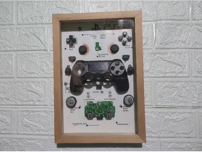

Informasi lainnya
← Kembali ke Produk KamiHiasan Dinding Motherboard
Ulasan Produk
Pajangan dinding bergaya teknologi yang dibuat dari motherboard laptop/PC serta komponen stik PS bekas. Disusun di dalam bingkai sebagai karya e-waste art yang cocok untuk kamar, ruang kerja, dan dekorasi.

TECH ART
Hasil karya dari barang bekas
Bagian dari projek kolaborasi Trash To Treasure, mengolah bahan bekas menjadi produk yang bermanfaat dan bernilai jual.
Alat dan Bahan
Bahan
- Motherboard laptop/PC bekas
- Tombol dan stik analog PS2/PS3 bekas
- Bingkai foto bekas ukuran 20 × 30 cm atau 30 × 40 cm
- Papan triplek atau MDF
- Cat semprot untuk latar
- Lem, baut kecil, dan cable tie
- Lampu LED strip USB (opsional)
Alat
- Obeng set
- Tang potong dan tang kombinasi
- Gergaji kecil atau gunting seng
- Bor mini, amplas, kuas
Langkah Kerja
- Bongkar dan pilih bagian motherboard yang menarik secara visual. Tangani bagian tajam dengan pelindung yang sesuai.
- Bersihkan debu motherboard menggunakan kuas kering, jangan dicuci dengan air.
- Siapkan dan cat papan latar; biarkan kering.
- Tata komponen motherboard dan stik PS sebagai fokus dekorasi.
- Rekatkan komponen; gunakan baut kecil untuk bagian yang lebih berat.
- Masukkan papan yang sudah disusun ke bingkai.
- Untuk versi premium, tambahkan LED strip dan pelindung mika bila diperlukan.
- Periksa kekuatan pemasangan dan pastikan tidak ada bagian tajam yang keluar.
Estimasi Biaya Produksi
Perkiraan biaya untuk satu produk berdasarkan makalah projek.
| Komponen biaya | Estimasi |
|---|---|
| Motherboard bekas | Rp0 |
| Bingkai | Rp10.000 |
| Lem | Rp5.000 |
| Pengait dinding | Rp2.000 |
| Total biaya produksi | Rp17.000 |
Harga Jual dan Laba
Biaya produksiRp17.000
Harga jualRp30.000
Perkiraan labaRp13.000
Laba = Harga jual − Biaya produksi = Rp30.000 − Rp17.000 = Rp13.000
Sumber: Makalah Projek Kolaborasi “Trash To Treasure”, halaman 6–8. Harga merupakan estimasi dalam makalah, bukan penawaran penjualan langsung.